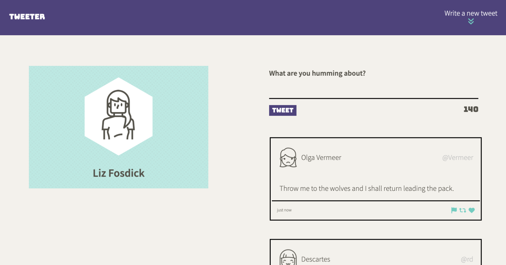

Hi I'm Liz!
I'm a recent grad of Lighthouse Labs' Web Development Bootcamp. I'm
embarking on a journey as a full stack developer after a varied
career in marketing and operations. I've also owned a few small
businesses along the way.
This site showcases some of my work. Thanks for visiting!
Tweeter is a simple, single-page Twitter clone I built during bootcamp. It uses HTML, CSS, JS, jQuery, AJAX, Node, Express, Chance,
and Body Parser, and features responsive design elements.

Languages: JavaScript, Ruby, HTML, CSS
Systems, Databases & Testing: SQL, Postgres, Git, Jest, Cypress, Mocha & Chai, Storybook
Frameworks, Libraries, & Environments: Node.js, React, Ajax, Express, EJS, JQuery, Bootstrap, SASS, Rails
Other Software & Platforms: Wordpress, Divi, Canva, Google Workspace, MS Office, Slack, Discord, Drip, Shopify, Etsy, Notion, Trello
Other Skills: Project management, blogging, copyediting, email marketing, digital advertising, SEO, event management